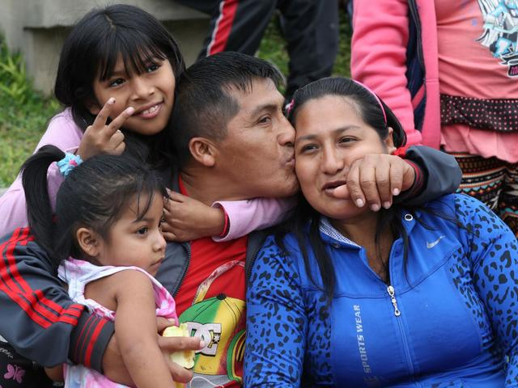

CONTACTO: +34 669569233
CORREO: deliciasdelabrasa@hotmail.com
ESTAMOS EN: Calle Universidad de Juan Carlos 14, Madrid, 278909
 Somos una familia que llegó a España con un sueño. Crear un restaurante familiar con el objetivo de dar a conocer los platos originarios de nuestra Tierra. Tras 2 años trabajando sin descanso en cualquier tipo de empleo, con la ayuda de amigos, familiares... En el año 2019 pudimos abrir nuestro primer establecimiento de comida peruana. Empezamos como cualquier restaurante, sufriendo los primeros meses y asumiendo gastos. Pero siempre con el orgullo de saber que habíamos podido cumplir nuestro sueño, por lo que no nos rendimos y continuamos luchando. A día de hoy, somos una de las cadenas gastronómicas más distintivas en España.
Perú, hogar de especies exóticas, tribus indígenas, monumentos históricos... y por su puesto productos alimenticios tan diversos como en ningún otro lugar. Perú es la tierra de la que procedemos, un lugar en el que podrás encontrar hasta 41 variedades de patata, 133 especies de pescados con las que se pueden hacer infinidad de recetas... Perú es una tierra que debes conocer.
CONTACTO: +34 669569233
CORREO: deliciasdelabrasa@hotmail.com
ESTAMOS EN: Calle Universidad de Juan Carlos 14, Madrid, 278909